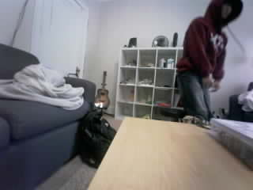
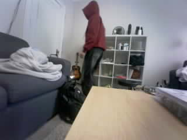
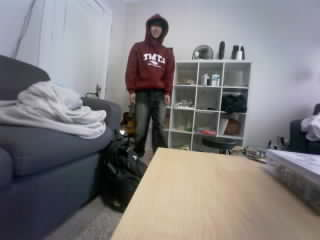
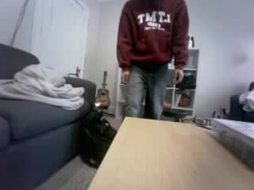
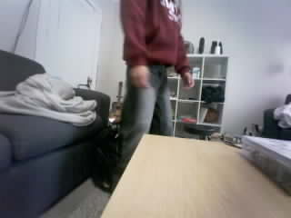
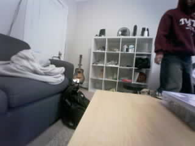
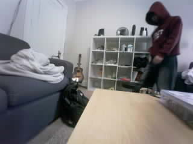
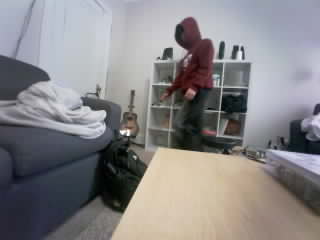
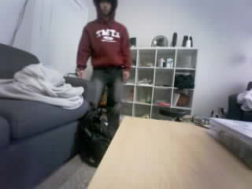
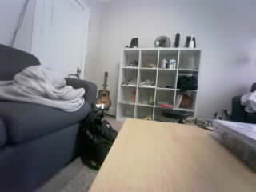

Frame 1058: LARGE_CHANGE | 9.708% changed area
Original JPEG · MeasurementsOriginal photos are unchanged. Boxes show the largest changed region against the learned empty scene. Area cutoff: 3%; confirmation: 3 frames. This is not deer recognition.

Frame 1058: LARGE_CHANGE | 9.708% changed area
Original JPEG · Measurements
Frame 1065: LARGE_CHANGE | 7.104% changed area
Original JPEG · Measurements
Frame 1072: LARGE_CHANGE | 7.146% changed area
Original JPEG · Measurements
Frame 1079: LARGE_CHANGE | 11.854% changed area
Original JPEG · Measurements
Frame 1086: LARGE_CHANGE | 16.021% changed area
Original JPEG · Measurements
Frame 1093: LARGE_CHANGE | 11.188% changed area
Original JPEG · Measurements
Frame 1100: LARGE_CHANGE | 9.750% changed area
Original JPEG · Measurements
Frame 1107: LARGE_CHANGE | 6.167% changed area
Original JPEG · Measurements
Frame 1114: LARGE_CHANGE | 9.354% changed area
Original JPEG · MeasurementsFrame 1121: SMALL_CHANGE | 0.708% changed area
Original JPEG · MeasurementsFrame 1128: SMALL_CHANGE | 0.333% changed area
Original JPEG · Measurements
Frame 1135: SMALL_CHANGE | 0.312% changed area
Original JPEG · Measurements